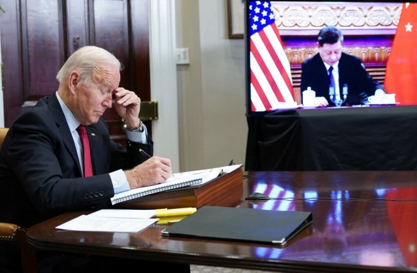

Nhà Trắng nói ông Biden không xem ông Tập là "bạn cũ", sau khi được Chủ tịch Trung Quốc gọi là "lão bằng hữu của tôi" trong họp thượng đỉnh.
Tổng thống nói ông có mối quan hệ lâu dài với Chủ tịch Tập. Họ từng gặp nhau nhiều lần, có thể thảo luận thẳng thắn để làm việc hiệu quả, nhưng Tổng thống không xem Chủ tịch Tập là bạn cũ", phó thư ký báo chí Nhà Trắng Andrew Bates hôm nay nói với phóng viên trên Không lực Một, khi Tổng thống Joe Biden đang trên đường đến bang New Hampshire.
Tuyên bố được Bates đưa ra khi các phóng viên hỏi Chủ tịch Trung Quốc Tập Cận Bình có ý định gì khi gọi Tổng thống Biden là "lão bằng hữu" trong cuộc gặp thượng đỉnh trực tuyến hôm 16/11. Bates từ chối bình luận về "ý định" của ông Tập trong cách gọi đó.
Thư ký báo chí Nhà Trắng Jen Psaki hôm 15/11 đưa ra bình luận tương tự trước hội nghị thượng đỉnh, khi được hỏi về quan điểm của Biden.
"Tổng thống không xem Chủ tịch Tập là bạn cũ, điều này vẫn nhất quán", Psaki cho hay. "Tổng thống từng nhiều lần gặp và trò chuyện trực tiếp với Chủ tịch Tập nên ông cảm thấy có thể trao đổi thẳng thắn".

Tổng thống Mỹ Joe Biden và Chủ tịch Trung Quốc Tập Cận Bình (trên màn hình) họp thượng đỉnh trực tuyến hôm 16/11. Ảnh: AFP.
Biden, 78 tuổi, thường nói về mối quan hệ lâu dài của ông với lãnh đạo Trung Quốc, đặc biệt khoảng thời gian ông là phó tổng thống Mỹ còn ông Tập là phó chủ tịch Trung Quốc. Tuy nhiên, Biden từng nói rõ ông không xem ông Tập, 68 tuổi, là "bạn cũ"
Biden, 78 tuổi, thường nói về mối quan hệ lâu dài của ông với lãnh đạo Trung Quốc, đặc biệt khoảng thời gian ông là phó tổng thống Mỹ còn ông Tập là phó chủ tịch Trung Quốc. Tuy nhiên, Biden từng nói rõ ông không xem ông Tập, 68 tuổi, là "bạn cũ".
Thẳng thắn mà nói, chúng tôi hiểu rõ nhau nhưng chúng tôi không phải những người bạn cũ. Đó đơn thuần chỉ là công việc", Tổng thống Mỹ nói tại cuộc họp báo ở Geneva, Thụy Sĩ hồi tháng 6.
Wang Huiyao, chủ tịch Trung tâm Trung Quốc và Toàn cầu hóa có trụ sở tại Bắc Kinh, cho rằng ông Tập muốn bày tỏ "thiện chí" khi gọi ông Biden bằng "lão bằng hữu". Tuy nhiên, Daniel Russel, cựu trợ lý Ngoại trưởng Mỹ, cho rằng đây là một phần trong nỗ lực tìm kiếm lợi thế ngay từ đầu cuộc họp của lãnh đạo Trung Quốc
Lãnh đạo Mỹ - Trung đã họp trực tuyến khoảng ba tiếng rưỡi, trong bối cảnh quan hệ song phương trở nên căng thẳng về các vấn đề thương mại, biến đổi khí hậu, nhân quyền và Đài Loan.
Ông Biden và ông Tập phát biểu mở đầu cuộc họp thượng đỉnh hôm 16/11. Video: Nhà Trắng.
Trên chuyên cơ Không lực Một tới New Hampshire, Biden cho biết đã đạt được tiến bộ với Trung Quốc trong vấn đề Đài Loan. Tuy nhiên, Tổng thống Mỹ sau đó nói Washington không khuyến khích Đài Loan độc lập.
"Chúng tôi sẽ không thay đổi chính sách. Chúng tôi không khuyến khích độc lập, mà khuyến khích họ làm chính xác những gì đã nêu trong Đạo luật Quan hệ với Đài Loan. Đó là điều chúng tôi đang làm", Biden cho hay.